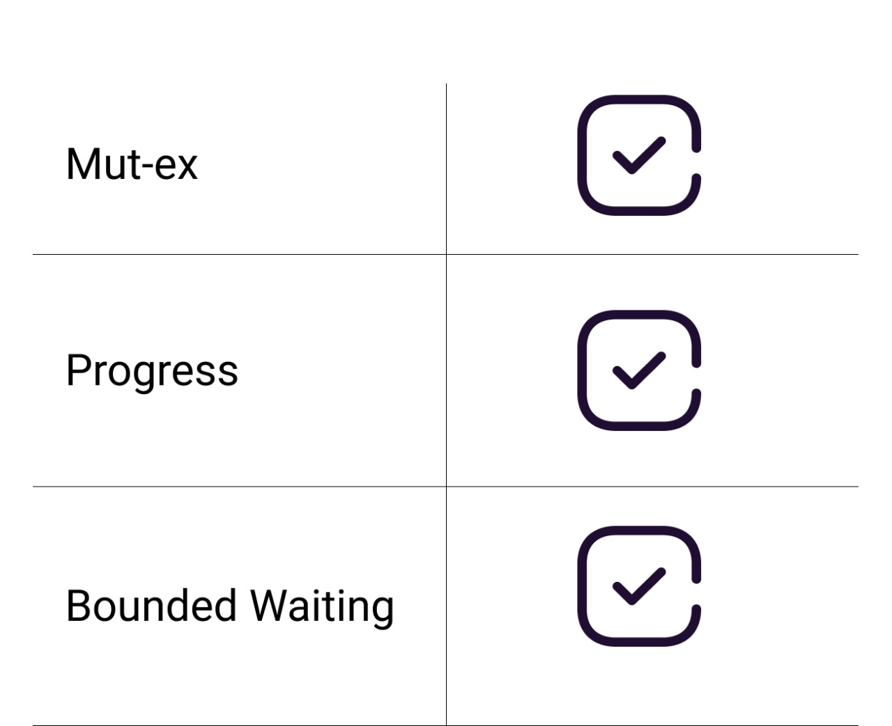

Buttons info
Home : In navbar home button is to jump to main page
Dropdown : To jump to any algorithm
Info panel : Displays the value of each required queue and semaphore.
Add Process: On clicking this button new process will be added.
P0 : On clicking this button P0 process will move forward according to algorithm.
save PDF : To save all the status of each stage of algorithm .
Tool Tips
Tooltips will help to get information about the hovered element.
here element with tooltips are:
Lock Variable, critical section, completed processes, Added, Entry, CS, Exit


To CS
By clicking the button the process will be moved to Critical Section if the Critical section is not occupied or Lock is 0.
Add Processes
By clicking Add Processes new processes will be added with the button and process icon.


To Entry Section
Processes will move to suspended queue if the critical section is occupied.
Example: p2 will be moved to suspended queue as critical section is occupied by p0.
Warning
If the process is there in critical section still if any process tries to interrupt then it will show the warning.


Full completion
It's gratitude message to display that all the processes are completed.
Save PDF
By clicking the save PDF the pdf will be formed by collecting all the text in textArea.

Analysis of Lock Variable
The lock variable mechanism doesn't provide Mutual Exclusion in some of the cases. This can be better described by looking at the pseudo code by the Operating System point of view I.E. Assembly code of the program. Let's convert the Code into the assembly language.
Load Lock, R0
CMP R0, #0
JNZ Step 1
Store #1, Lock
Store #0, Lock
The problem with the lock variable mechanism is that, at the same time, more than one process can see the vacant tag and more than one process can enter in the critical section. Hence, the lock variable doesn't provide the mutual exclusion that's why it cannot be used in general.
Since, this method is failed at the basic step; hence, there is no need to talk about the other conditions to be fulfilled.
